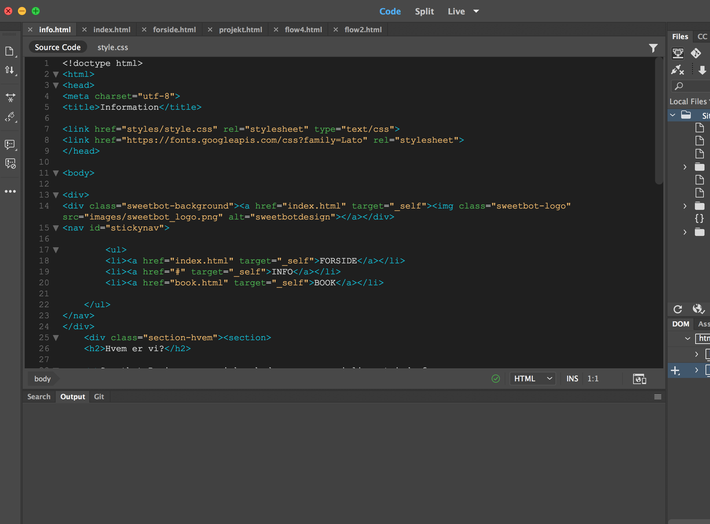
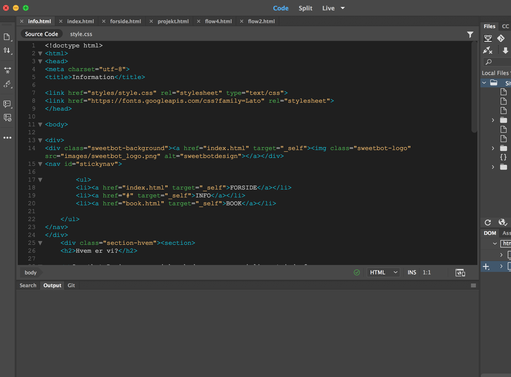

Sweetbot.design er internationalt orienteret webbureu som består af 4 medarbejdere og 2 CEOs.
Sweetbot ønsker at implementere en dansk udgave af deres website.
Udover den tekniske løsning, skal der gives et bud på visuelle elementer samt informationsarkitektur til sitet.
Sweetbot har netop udviklet deres egen e-commerce løsning under navnet HotBot, men mangler et logo samt ikoner til løsningen.
Dette skal udvikles og demonstreres i den online website løsning.
 
